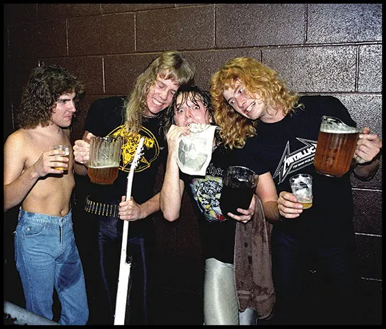

Топ 3 пісні по прослуховуванню:
- Enter Sandman
- Nothing Else Matters
- Master Of Puppets
Про гурт
Metallica — американський метал-гурт з Лос-Анджелеса, Каліфорнія, який грає в жанрах треш-метал та геві-метал. Разом з Slayer, Megadeth та Anthrax входять до «великої четвірки треш-металу»[1]. Заснований в 1981 році, коли Джеймс Гетфілд відгукнувся на оголошення барабанщика Ларса Ульріха, розміщене у місцевій газеті. Зараз до складу гурту, окрім Гетфілда та Ульріха, входять гітарист Кірк Геммет (який приєднався у 1983) та бас-гітарист Роберт Трухільйо (з 2003 року). Також в різні періоди учасниками гурту були: гітарист Дейв Мастейн (який згодом заснував Megadeth), басисти Рон Макговні, Кліфф Бертон та Джейсон Ньюстед. Гурт також тривалий час співпрацював з Бобом Роком, який спродюсував усі їхні альбоми з 1990 до 2003 року, та виконував обов'язки бас-гітариста в період між відходом Ньюстеда та приходом Трухільйо.
Гурт отримав прихильників у середовищі андеґраундної музики та схвальні відгуки критиків, випустивши третій студійний альбом Master of Puppets (1986), який зараз вважається «класикою треш-металу» та суттєво вплинув на подальший розвиток цього жанру. Комерційний успіх прийшов після випуску п'ятого альбому (також відомого під назвою The Black Album), який дебютував на першій сходинці чарту Billboard 200. Після випуску цього альбому, подальша творчість гурту відійшла від екстремального стилю і стала більш мейнстримовою.
Гурт отримав дев'ять нагород Греммі, а п'ять їхніх альбомів дебютували на першому рядку чарта Billboard 200[2], що зробило Metallica першим гуртом, якому це вдалося; цього результату пізніше досягнув, а згодом й перевершив Dave Matthews Band[3]. Альбом Metallica (1991) було продано у кількості понад 15 мільйонів копій у США та 28 мільйонів копій по всьому світу, що зробило його одним з 25-ти найкраще продаваних альбомів у країні[4]. В грудні 2009 року, він став найпродаванішим альбомом ери SoundScan, обігнавши Come On Over кантрі-виконавиці Шанайї Твейн[5]. З випуском останнього альбому Death Magnetic (2008), гурт продав понад 100 мільйонів альбомів у всьому світі. Станом на грудень 2009, Metallica — четвертий найпродаваніший музичний виконавець з початку ери SoundScan, продавши з 25 травня 1991 року більше 52 672 000 альбомів лише в Сполучених Штатах[6].
Фотосет
